Identify picture 13 by viewing it, exploring a real object, or using a tactile graphic, then write, sign, type, or braille its name.
13.
Write or sign the names of the following things in your exercise book.
Identify picture 13 by viewing it, exploring a real object, or using a tactile graphic, then write, sign, type, or braille its name.
13.
Identify picture 14 by viewing it, exploring a real object, or using a tactile graphic, then write, sign, type, or braille its name.
14.
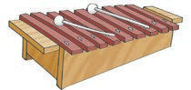
Identify picture 15 by viewing it, exploring a real object, or using a tactile graphic, then write, sign, type, or braille its name.
15.
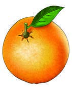
Identify picture 16 by viewing it, exploring a real object, or using a tactile graphic, then write, sign, type, or braille its name.
16.
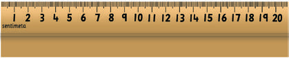
Identify picture 17 by viewing it, exploring a real object, or using a tactile graphic, then write, sign, type, or braille its name.
17.
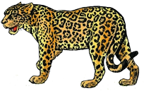
Identify picture 18 by viewing it, exploring a real object, or using a tactile graphic, then write, sign, type, or braille its name.
18.
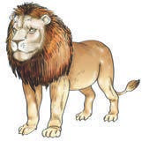
Identify picture 19 by viewing it, exploring a real object, or using a tactile graphic, then write, sign, type, or braille its name.
19.
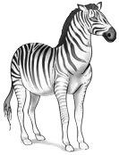
Identify picture 20 by viewing it, exploring a real object, or using a tactile graphic, then write, sign, type, or braille its name.
20.
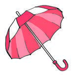
Identify picture 21 by viewing it, exploring a real object, or using a tactile graphic, then write, sign, type, or braille its name.
21.
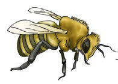
Identify picture 22 by viewing it, exploring a real object, or using a tactile graphic, then write, sign, type, or braille its name.
22.
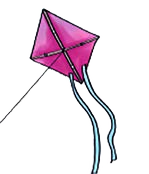
Identify picture 23 by viewing it, exploring a real object, or using a tactile graphic, then write, sign, type, or braille its name.
23.
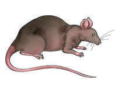
Identify picture 24 by viewing it, exploring a real object, or using a tactile graphic, then write, sign, type, or braille its name.
24.
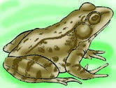